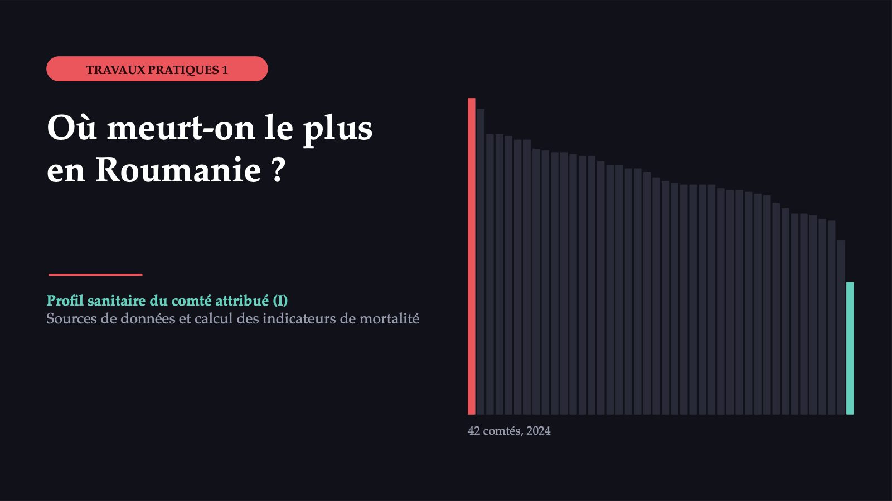
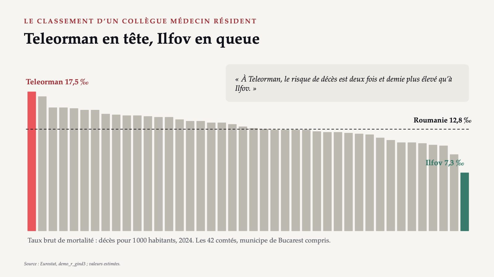
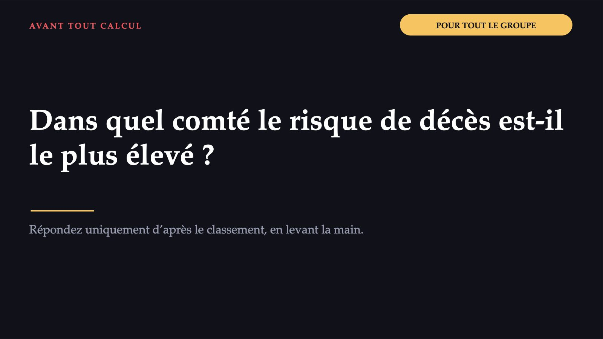

Où meurt-on le plus en Roumanie ?

1 / 14Teleorman en tête, Ilfov en queue

2 / 14Dans quel comté le risque de décès est-il le plus élevé ?

3 / 14Où trouver les décès et la population d’un comté
![LES SOURCES DE DONNÉES Où trouver les décès et la population d’un comté Eurostat demo_r_magec3 : décès par groupe d’âge quinquennal demo_r_pjangrp3 : population au 1er janvier, sur les mêmes groupes demo_r_gind3 : taux brut publié Filtrer sur un comté (région NUTS 3). INS, base TEMPO POP206K : décédés ayant leur résidence habituelle en Roumanie POP106A : population résidente au 1er juillet Lire d’abord la fiche de métadonnées de la matrice. À l’écran : la démonstration. Vous ne téléchargez rien ; chaque équipe reçoit le fichier Excel de son comté. Sources : ec.europa.eu/eurostat/databrowser · https://statistici.insse.ro:8077/tempo-ins](diapozitive/LP01/004.jpg) 4 / 14
4 / 14Trois vérifications
![AVANT TOUTE COMPARAISON Trois vérifications 1 Les mêmes personnes au numérateur et au dénominateur ? Décès et population sur la même base : toutes deux selon la résidence habituelle, ou toutes deux selon le domicile. 2 La même définition sur toute la série ? Décès : depuis 2014, selon la résidence habituelle. Population : à Teleorman, les 90 ans et plus passent de 4 055 à 2 512 entre 2021 et 2022, sans explication. 3 La dernière année et ses indicateurs de statut ? 2024 : population marquée « e », c’est-à-dire estimée ; les années récentes peuvent être révisées. Notez la date de téléchargement. Autocontrôle : 5 495 ÷ 314 259 × 1 000 = 17,49, soit exactement la valeur publiée pour Teleorman.](diapozitive/LP01/005.jpg) 5 / 14
5 / 14Votre comté, jusqu’aux derniers travaux pratiques
![LES ÉQUIPES ET LES COMTÉS Votre comté, jusqu’aux derniers travaux pratiques Groupe 9 Alba, Buzău, Gorj, Neamț, Suceava Groupe 10 Arad, Caraș-Severin, Harghita, Olt, Timiș Groupe 11 Argeș, Călărași, Hunedoara, Prahova, Tulcea Groupe 12 Bacău, Cluj, Ialomița, Satu Mare, Vaslui Groupe 13 Bihor, Constanța, Iași, Sălaj, Vâlcea Groupe 14 Bistrița-Năsăud, Covasna, Maramureș, Sibiu, Vrancea Groupe 15 Botoșani, Dâmbovița, Mehedinți, Brașov, Galați Groupe 16 Brăila, Bucarest, Dolj, Giurgiu, Mureș Groupe 17 Cluj, Tulcea, Vâlcea, Botoșani, Timiș Groupe 18 Bucarest, Brăila, Iași, Covasna, Hunedoara Groupe 19 Constanța, Dolj, Bistrița-Năsăud, Olt, Sibiu Groupe 20 Brașov, Suceava, Călărași, Mehedinți, Harghita Fichier de l’équipe : LP01_<Comté>.xlsx, sans diacritiques (par exemple LP01_Bistrita-Nasaud.xlsx), par la messagerie institutionnelle ou sur Teams. Teleorman et Ilfov restent l’exemple commun.](diapozitive/LP01/006.jpg) 6 / 14
6 / 14Teleorman, Ilfov et Roumanie, 2024
![LES DONNÉES DE L’EXERCICE COMMUN Teleorman, Ilfov et Roumanie, 2024 Teleorman · Ilfov · Roumanie Groupe d’âge · décès · population moyenne · décès · population moyenne · décès · population moyenne 0–44 ans · 133 · 136 855 · 180 · 354 080 · 8 453 · 9 829 314 45–64 ans · 882 · 94 462 · 897 · 160 335 · 43 484 · 5 386 457 65–74 ans · 1 206 · 44 792 · 1 069 · 50 636 · 59 305 · 2 305 994 75 ans et plus · 3 274 · 38 150 · 2 163 · 28 913 · 133 333 · 1 533 599 Total · 5 495 · 314 259 · 4 309 · 593 964 · 244 575 · 19 055 364 Source : Eurostat, demo_r_magec3 et demo_r_pjangrp3 ; population moyenne de l’année (moyenne de la population au 1er janvier 2024 et au 1er janvier 2025), estimée.](diapozitive/LP01/007.jpg) 7 / 14
7 / 14L’exercice commun en quatre étapes
8 / 14Trois termes nouveaux, quatre formules
![QUATRE CALCULS, EN MOTS Trois termes nouveaux, quatre formules Taux brut « combien de décès par an pour mille habitants » décès de l’année ÷ population moyenne × 1 000 Taux spécifique par âge « taux calculé dans un seul groupe d’âge » décès du groupe ÷ population du groupe × 1 000 Taux standardisé « taux du comté avec la structure par âge du pays » somme : taux spécifique × poids du groupe dans le pays (0,5158, et non 51,58 %) Ratio standardisé (RSM, SMR) « décès observés face aux décès attendus aux taux du pays » décès observés ÷ décès attendus Gardez quatre chiffres significatifs ; n’arrondissez que le résultat final.](diapozitive/LP01/009.jpg) 9 / 14
9 / 14À structure par âge égale, l’écart se resserre
![LES RÉSULTATS · ÉTAPES 1, 3 ET 4 À structure par âge égale, l’écart se resserre 17,5 13,3 Teleorman 7,3 10,4 Ilfov 12,8 12,8 Roumanie taux brut taux standardisé Teleorman par rapport au pays de 4,7 à 0,5 décès pour 1 000 Teleorman par rapport à Ilfov de 2,4 fois à 1,3 fois Ratio standardisé Teleorman 1,027 : environ 3 % de décès de plus qu’aux taux du pays ; Ilfov 0,796 : environ 20 % de décès en moins Chaque ratio se compare uniquement au pays ; les ratios de deux comtés ne se comparent pas entre eux. Décès pour 1 000 habitants, 2024 ; standard : population moyenne de la Roumanie en 2024. Source : Eurostat, calcul tiré des notes de la séance.](diapozitive/LP01/010.jpg) 10 / 14
10 / 14À âge égal : un peu plus élevé, pas deux fois et demie
 11 / 14
11 / 14Avant de croire un classement selon la mortalité, demandez quel taux a été utilisé.
12 / 14Le premier chapitre du profil de votre comté
![À LA MAISON, DANS LES DEUX JOURS Le premier chapitre du profil de votre comté 1 Dans la feuille « Lisez-moi » : la source, les codes des jeux de données et la date d’extraction. 2 Le taux brut pour 2019–2024 ; pour 2024, confronté à la valeur publiée par Eurostat. 3 Pour 2024 : les taux spécifiques, le taux standardisé, le ratio standardisé et les années potentielles de vie perdues avant 65 ans. 4 Trois graphiques ; le saut de population entre 2021 et 2022, indiqué sur le graphique. 5 Un constat : l’indicateur, la valeur, l’année, le terme de comparaison et une limite des données. Chaque étudiant, individuellement, dans le formulaire du travail à la maison. La feuille de calcul est conservée pour les séances suivantes.](diapozitive/LP01/013.jpg) 13 / 14
13 / 14Trois questions pour finir
14 / 14Flèches ou espace : navigation · O : vue d’ensemble · N : notes de l’intervenant · F : plein écran · Échap : fermer